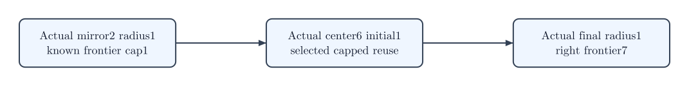
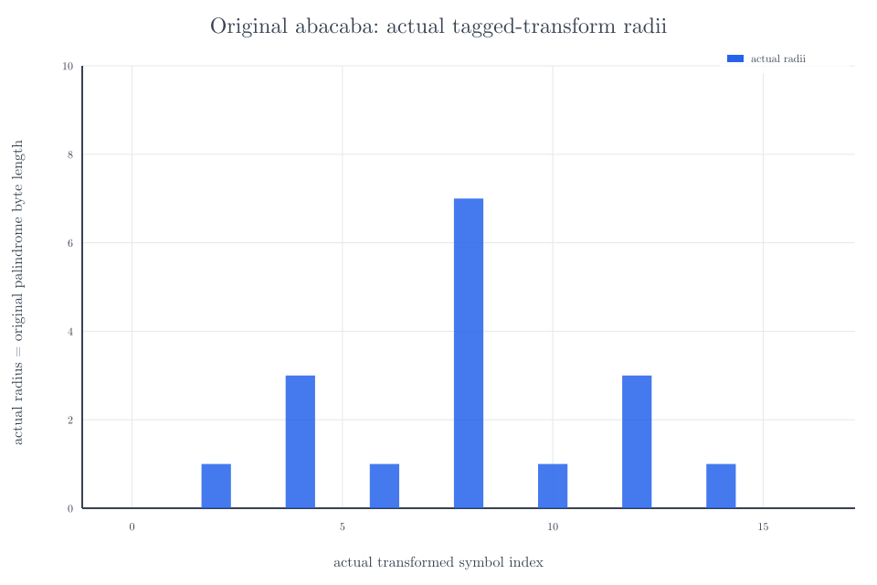
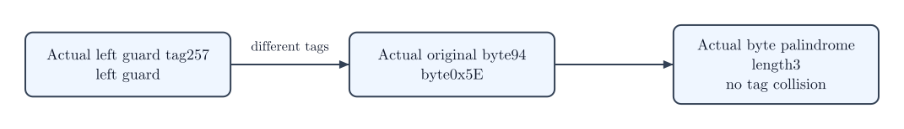
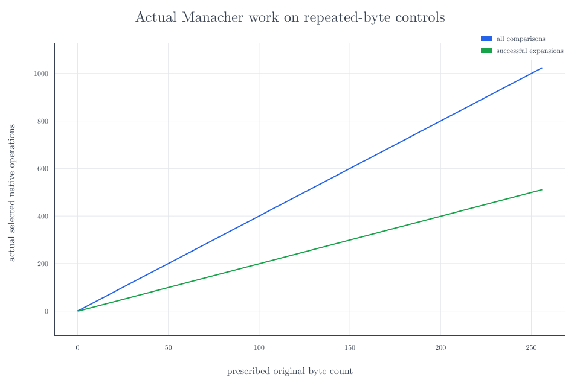

Manacher byte-palindrome radii
Abstract
Manacher reuses a mirrored radius inside the rightmost known palindrome and tests only what remains uncertain. We retain the original abacaba radius array and leftmost-longest policy, expose real mirror/expansion decisions, and replace collision-prone character sentinels with distinct integer tags so every input byte is supported safely.
Tiny mirrored radius on aba
Insert a separator between original bytes and at both ends, then distinct left/right guards. Odd and even byte palindromes become radii centered at transformed symbols. At center i inside the known inclusive right frontier R with stored center C, initialize radius to min(p[2*C−i],R−i). The cap prevents mirror reuse from asserting anything beyond the known frontier. Then compare actual symmetric symbols until a mismatch or explicit bound is reached, and advance the stored frontier only if i+p[i] is strictly greater.
The tiny aba example has a real reused positive mirror radius near the end of its scan. The table shows every actual center, while the diagram selects that one real initialization and its final radius. The diagram is not a second palindrome expansion or a fabricated prefix history.
#include <dm/dm.hpp>
int main() {
std::filesystem::create_directories("build");
auto t = dm::algorithms::manacher_trace("aba");
std::print("| actual center | prior frontier center | prior inclusive right | reuse | actual mirror or " "SIZE_MAX | mirror radius | actual cap | initial radius | final radius | actual new right " "|\n| ---: | ---: | ---: | --- | ---: | ---: | ---: | ---: | ---: | ---: |\n");
for (auto &c : t.centers)
std::print("| {} | {} | {} | {} | {} | {} | {} | {} | {} | {} |\n",
c.index, c.center_before, c.right_before, c.reused, c.mirror,
c.mirror_radius, c.bound, c.initial, c.final, c.right_after);
auto it = std::find_if(t.centers.begin(), t.centers.end(), [](auto &c) {
return c.reused && c.initial > 0;
});
auto &c = *it;
dm::graphics::Diagram d;
d.node("mirror", {0, 0},
std::format("Actual mirror{} radius{}\nknown frontier cap{}",
c.mirror, c.mirror_radius, c.bound)).node(
"initial", {6, 0},
std::format("Actual center{} initial{}\nselected capped reuse", c.index,
c.initial)).node("final", {12, 0},
std::format("Actual final radius{}\nright frontier{}",
c.final, c.right_after)).edge(
"mirror", "initial").edge("initial", "final");
d.save_svg("build/manacher_tiny.svg");
}| actual center | prior frontier center | prior inclusive right | reuse | actual mirror or SIZE_MAX | mirror radius | actual cap | initial radius | final radius | actual new right |
|---|---|---|---|---|---|---|---|---|---|
| 1 | 0 | 0 | false | 18446744073709551615 | 0 | 0 | 0 | 0 | 1 |
| 2 | 1 | 1 | false | 18446744073709551615 | 0 | 0 | 0 | 1 | 3 |
| 3 | 2 | 3 | false | 18446744073709551615 | 0 | 0 | 0 | 0 | 3 |
| 4 | 2 | 3 | false | 18446744073709551615 | 0 | 0 | 0 | 3 | 7 |
| 5 | 4 | 7 | true | 3 | 0 | 2 | 0 | 0 | 7 |
| 6 | 4 | 7 | true | 2 | 1 | 1 | 1 | 1 | 7 |
| 7 | 4 | 7 | false | 18446744073709551615 | 0 | 0 | 0 | 0 | 7 |

Original abacaba radii and byte positions
Retain s=abacaba, n=7, transform length17 and original radius array[0,0,1,0,3,0,1,0,7,0,1,0,3,0,1,0,0]. The actual maximum center is8 with radius7 and original start floor((8−7)/2)=0. With this transform every nonsentinel radius equals the length in original bytes of the palindrome at that center. Scanning centers in increasing order and accepting only strictly larger radii preserves the leftmost longest occurrence; babad therefore chooses bab rather than aba.
The report obtains the actual integer transform from the producer instead of rebuilding a ^/#/$ string for display. Original bytes have values0..255, separator256, left guard257 and right guard258. Native labels make every role explicit without confusing an original punctuation byte with a control. The original ASCII fixture needs no external dataset.
#include <dm/dm.hpp>
int main() {
std::filesystem::create_directories("build");
auto t = dm::algorithms::manacher_trace("abacaba");
auto &a = t.analysis;
std::print("Actual original bytes {}; transform symbols {}; actual maximum center {}; selected start " "{}; length {}; returned run {}.\n\n| actual transformed index | actual tagged symbol | " "native role label | actual radius |\n| ---: | ---: | --- | ---: |\n",
t.input.size(), t.symbols.size(), a.best_center, a.longest.start,
a.longest.length,
t.input.substr(a.longest.start, a.longest.length));
std::vector<double> x, y;
for (std::size_t i = 0; i < t.symbols.size(); ++i) {
std::print("| {} | {} | {} | {} |\n", i, t.symbols[i],
dm::algorithms::manacher_symbol_label(t.symbols[i]),
a.radii[i]);
x.push_back(i);
y.push_back(a.radii[i]);
}
auto p = dm::graphics::RPlot::create();
p.bars(x, y, "actual radii", {37, 99, 235}, .7).y_limits(0, 10).title(
"Original abacaba: actual tagged-transform radii").x_label(
"actual transformed symbol index").y_label("actual radius = original palindrome byte length").save_svg("build/manacher_original.svg");
}Actual original bytes 7; transform symbols 17; actual maximum center 8; selected start 0; length 7; returned run abacaba.
| actual transformed index | actual tagged symbol | native role label | actual radius |
|---|---|---|---|
| 0 | 257 | left guard | 0 |
| 1 | 256 | separator | 0 |
| 2 | 97 | byte0x61 | 1 |
| 3 | 256 | separator | 0 |
| 4 | 98 | byte0x62 | 3 |
| 5 | 256 | separator | 0 |
| 6 | 97 | byte0x61 | 1 |
| 7 | 256 | separator | 0 |
| 8 | 99 | byte0x63 | 7 |
| 9 | 256 | separator | 0 |
| 10 | 97 | byte0x61 | 1 |
| 11 | 256 | separator | 0 |
| 12 | 98 | byte0x62 | 3 |
| 13 | 256 | separator | 0 |
| 14 | 97 | byte0x61 | 1 |
| 15 | 256 | separator | 0 |
| 16 | 258 | right guard | 0 |

Literal punctuation cannot masquerade as a sentinel
The former implementation inserted character controls ^,#,$ into an unrestricted byte string and assumed they could match nothing in the input. A literal ^ could match the left guard during expansion and lead to an out-of-bounds index; literal separator bytes could also yield incorrect byte-length radii. The new producer uses integer tags outside the byte domain and explicit safe index bounds. It accepts every byte value, including embedded NULs and high bytes, while preserving ordinary sentinel-free ASCII results.
For the original input bytes #, the actual longest palindrome is all three bytes. Its original byte0x5E is distinct from tagged left guard257, and byte0x23 is distinct from separator256. The diagram and table show those real producer values. Matching is byte-sensitive: a palindromic UTF-8 byte sequence and a palindromic Unicode codepoint/grapheme sequence are different problems.
#include <dm/dm.hpp>
int main() {
std::filesystem::create_directories("build");
auto t = dm::algorithms::manacher_trace("^#^");
std::print("| actual transformed index | actual integer symbol | native role label | actual radius |\n| " "---: | ---: | --- | ---: |\n");
for (std::size_t i = 0; i < t.symbols.size(); ++i)
std::print("| {} | {} | {} | {} |\n", i, t.symbols[i],
dm::algorithms::manacher_symbol_label(t.symbols[i]),
t.analysis.radii[i]);
std::print("\nActual selected start {}; actual byte length {}; native run `{}`.\n",
t.analysis.longest.start, t.analysis.longest.length,
t.input.substr(t.analysis.longest.start,
t.analysis.longest.length));
dm::graphics::Diagram d;
d.node("guard", {0, 0},
std::format("Actual left guard tag{}\n{}", t.symbols[0],
dm::algorithms::manacher_symbol_label(t.symbols[0]))).node("byte", {6, 0}, std::format("Actual original byte{}\n{}", t.symbols[2], dm::algorithms::manacher_symbol_label(t.symbols[2]))).node("result", {12, 0}, std::format("Actual byte palindrome length{}\nno tag collision", t.analysis.longest.length)).edge("guard", "byte", "different tags").edge("byte", "result");
d.save_svg("build/manacher_tags.svg");
}| actual transformed index | actual integer symbol | native role label | actual radius |
|---|---|---|---|
| 0 | 257 | left guard | 0 |
| 1 | 256 | separator | 0 |
| 2 | 94 | byte0x5E | 1 |
| 3 | 256 | separator | 0 |
| 4 | 35 | byte0x23 | 3 |
| 5 | 256 | separator | 0 |
| 6 | 94 | byte0x5E | 1 |
| 7 | 256 | separator | 0 |
| 8 | 258 | right guard | 0 |
Actual selected start 0; actual byte length 3; native run ^#^.

Why comparisons remain linear
There are exactly2*n+1 nonsentinel centers. A reused mirror radius strictly inside its frontier cap cannot grow: its next real comparison must fail by reflected palindrome symmetry. A radius reaching the cap can grow only by testing new positions beyond the prior right frontier. Every successful expansion therefore consumes progress in a frontier that never retreats, while each center contributes at most one failed terminating equality test. This yields O(n) actual comparisons and O(n) storage.
The old header overstated this as every comparison advancing right. Failed comparisons do not advance it, and neither does mere mirror reuse. The native counts below separate actual successful expansions, total comparisons and actual frontier updates. Prescribed repeated-byte inputs are independent count-only studies, not prefix replay for reconstructing a trace.
Complete2*n+3 transform/radius geometry is checked before allocation. Complete trace admission initially counts n original bytes plus twice the transform length for actual symbols/final radii, then each real center/comparison record before copying. Default cap is one million; zero disables only that optional cap. Fields, capacities, result/runtime copies and physical bytes are excluded. Unknown future comparisons are not fabricated; a trace is complete or throws. Empty input has three transformed symbols and one real separator-center mismatch, with zero longest length and start.
#include <dm/dm.hpp>
int main() {
std::filesystem::create_directories("build");
std::vector<double> x, y, z;
std::print("| prescribed repeated input bytes | actual centers | actual reused mirrors | actual " "successful expansions | actual comparisons including failures | actual frontier updates " "|\n| ---: | ---: | ---: | ---: | ---: | ---: |\n");
for (std::size_t n : {0, 1, 2, 4, 8, 16, 32, 64, 128, 256}) {
auto a = dm::algorithms::manacher_analyze(std::string(n, 'a'));
std::print("| {} | {} | {} | {} | {} | {} |\n", n, a.work.centers,
a.work.mirror_reuses, a.work.expansions, a.work.comparisons,
a.work.frontier_updates);
x.push_back(n);
y.push_back(a.work.comparisons);
z.push_back(a.work.expansions);
}
auto p = dm::graphics::RPlot::create();
p.line(x, y, "all comparisons", {37, 99, 235}, 2).line(
x, z, "successful expansions", {22, 163, 74}, 2).title(
"Actual Manacher work on repeated-byte controls").x_label(
"prescribed original byte count").y_label("actual selected native operations").save_svg("build/manacher_work.svg");
}| prescribed repeated input bytes | actual centers | actual reused mirrors | actual successful expansions | actual comparisons including failures | actual frontier updates |
|---|---|---|---|---|---|
| 0 | 1 | 0 | 0 | 1 | 1 |
| 1 | 3 | 0 | 1 | 4 | 2 |
| 2 | 5 | 1 | 3 | 8 | 3 |
| 4 | 9 | 5 | 7 | 16 | 5 |
| 8 | 17 | 13 | 15 | 32 | 9 |
| 16 | 33 | 29 | 31 | 64 | 17 |
| 32 | 65 | 61 | 63 | 128 | 33 |
| 64 | 129 | 125 | 127 | 256 | 65 |
| 128 | 257 | 253 | 255 | 512 | 129 |
| 256 | 513 | 509 | 511 | 1024 | 257 |

Verification and references
Native tests enumerate511 binary words through length eight and1093
sentinel-byte words through length six, independently enumerate every raw
substring to recover each centered radius and leftmost optimum, and inspect
every actual mirror/comparison/frontier record. They retain the original exact
radius array, odd/even and leftmost ties, all256 byte values,500 arbitrary-byte
inputs, explicit caret/separator/NUL controls, complete quotas, native tag
labels, empty behavior and ownership. Existing4000 random-string brute-force
regression cases remain. The ten-report batch passes 95 CTest cases, 30 directly
instrumented ASan/UBSan cases, 121 compiled and executed public examples,
601/601 scoped documentation definitions and 11 representative hovers.
Independent integer, Fraction, graph, string and NumPy references verify 82,729
records, including the complete original seeded LSH study. Frozen comparisons
preserve ordinary legacy results; malformed-input, sentinel-collision, ownership
and explicit-budget corrections are documented above. Thirteen checkout headers
and thirteen installed headers compile independently, and an installed-header
native consumer links and runs. Each complete report program runs against the
checkout library; all four native figures are reviewed and HTML/Markdown exports
preserve computed results and image bytes. Batch receipts:
build/mepml-conversion/batch-214-223/.
G. Manacher(1975), A New Linear-Time On-Line Algorithm for Finding the Smallest Initial Palindrome of a String, Journal of the ACM22(3),346–351. This report uses the modern full-radius mirror formulation to find the longest contiguous byte palindrome, with explicit tagged-control and finite-container contracts for this implementation.